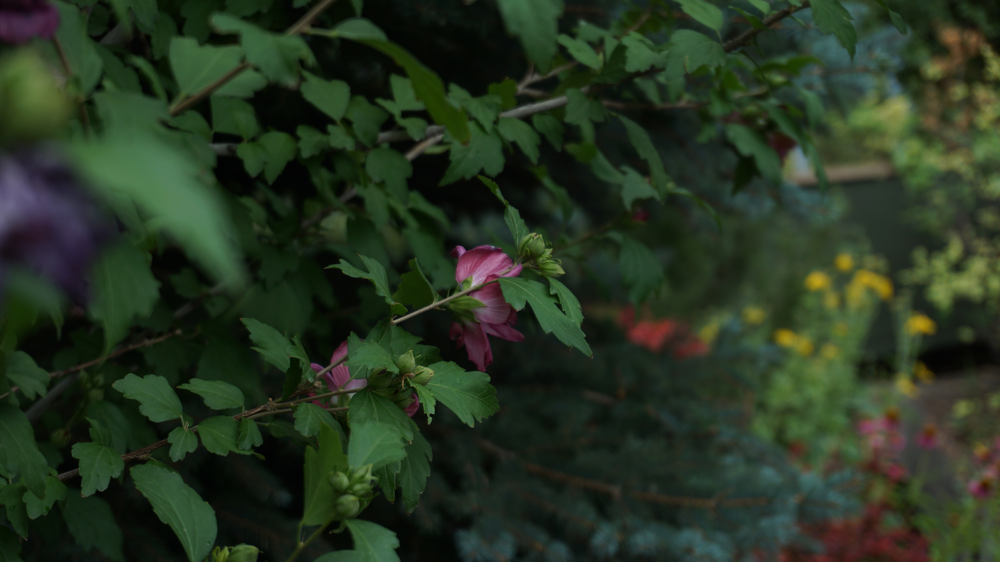
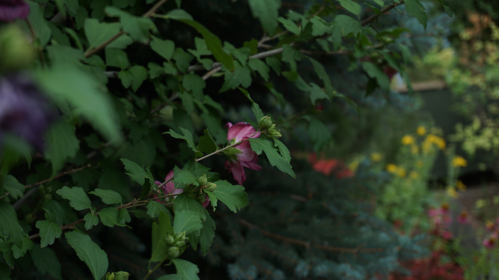
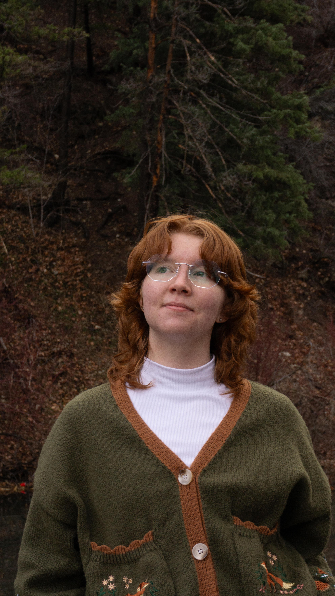
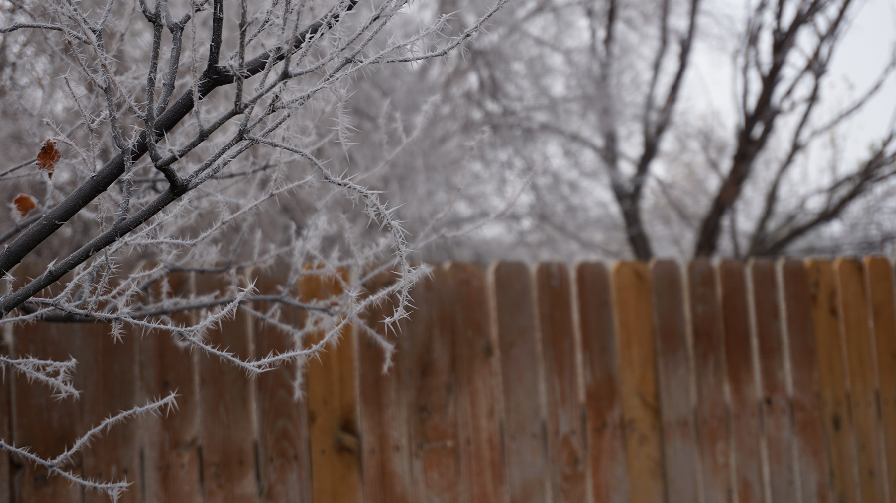
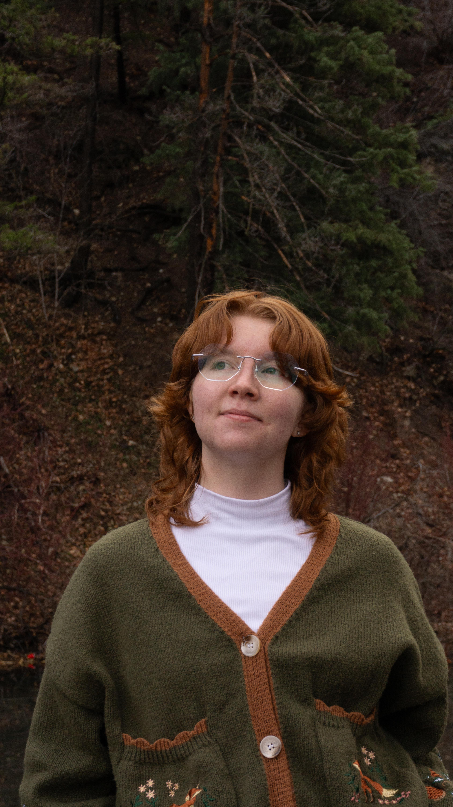
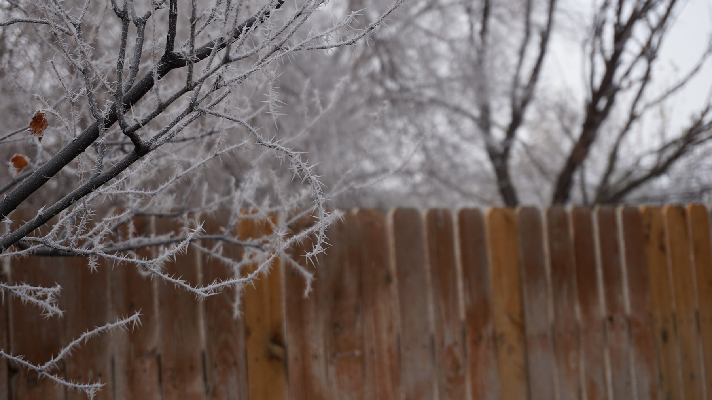
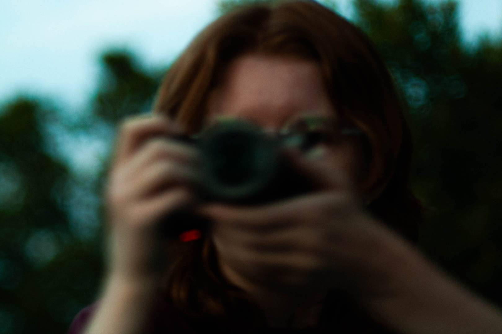
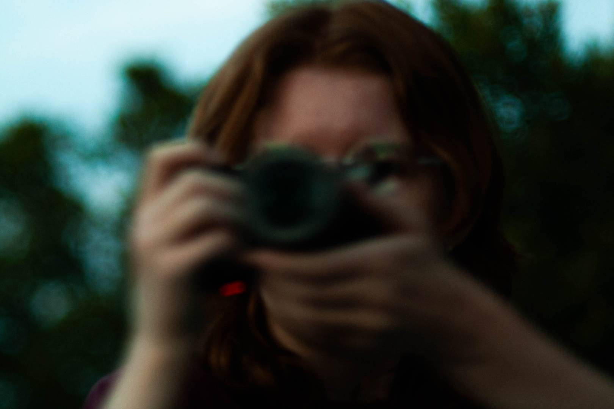

Karley M Joseph | xx yrs old
Utah Filmmaker | UVU Student
Throughout my life I've gravitated through different mediums of storytelling, from literature to music, but I always find myself back to Film. Film is a beautiful symphony of all forms of storytelling, it's art through the visuals, it's literature through the characters and the world, and it's music with soundtracks that enhance the message. As a filmmaker I've learned that it's important to incorporate my love of other forms of storytelling into the films I create.
Learning has been at the heart of my life for as long as I can remember. Even when I found myself in non tradition education I love taking the time to learn new and exciting things. I pride myself on being dedicated in my education. One of my accomplishments is maintaining a 4.0 throughout high school and now through college. I graduated at the top of my class and continue to manage my time in a valuable and productive way. Continuing my education at Utah Valley University will help me to learn as much as I can before stepping into the industry.
I want to create films that make people remember to smile. For many years of my life, Film was a way to find joy even when times got rough. I want to create shows and movies that remind people to do the same. Art is an escape as well as a way to create community. Some of my fondest memories are watching movies with my family. I want to create art that sparks those memories of joy and laughter for others. My biggest goal in life is to create beautiful art that reminds people that life isn't so bad.
 



 
